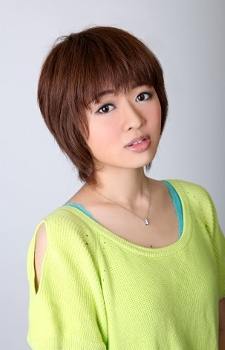

Shiho Kokido is a Japanese voice actress. She is affiliated with Ken Production. Her first major role was Kotone Amamiya from Brave Beats.
- Gender: Female
- Birthday: December 20
- Hometown: Tokyo, Japan
- Hobby: Singing
- Skills: Playing Drums and Ping-Pong

|

|

|
|---|
|  |
Shiho Kokido is a Japanese voice actress. She is affiliated with Ken Production. Her first major role was Kotone Amamiya from Brave Beats.
|
|---|
 |
Yuri Plisetsky | Yuri!!! on Ice | Yuri Plisetsky is a Russian competitive figure skater. He has won three consecutive junior world championships. Yuri is very ambitious and determined to become the best of the best in figure skating. HJe is short-tempered and very accustomed to yelling despite his looks. Shiho Kokido voiced younger Yuri Plisetsky. |
Go Back to Main Page |
Go Back to Homepage |
|
|
|
OR |
|